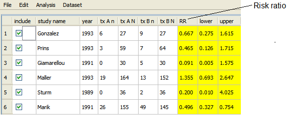
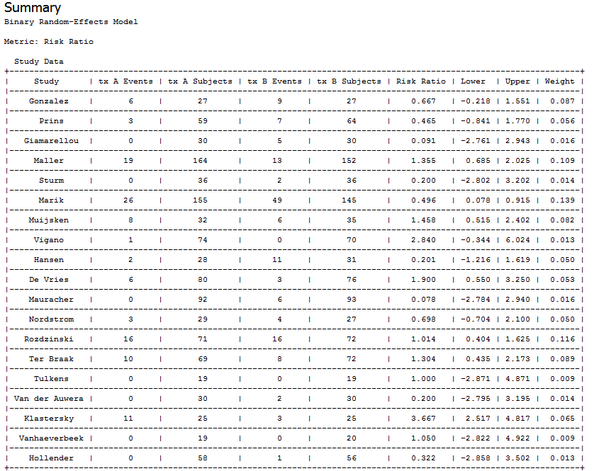

Example - Running an Analysis
This section provides an example that illustrates how to perform a meta-analysis of binary data. The section covers the following:
Running the Example
To run the example, do the following steps:
- Open the data set amino.oma, as described in Open Meta-Analyst Window.
The data is taken from a meta-analysis of studies of the effects of single versus multiple daily doses of aminoglycosides in the treatment of infections.
- Select the studies you want to include in the analysis, using the check boxes in the "include" column. In this example,
all studies are selected.
- Click the Analysis menu
and select metric > two-arm.
- Select a metric for the analysis, such as RR (risk ratio), as shown below.

The risk ratios are now displayed in the effect size column.

See Metrics for a description of the available metrics.
- In the Analysis menu,
select meta-analysis.
This opens the Method & Parameters dialog, as shown below.

You can select a method in the analysis method field. The default method is Binary Random-Effects.. See
Fixed-Effect Methods or Random-Effects Methods for a complete description of the available methods.
- Select the forest plot tab, which displays the forest plot parameters dialog.

- Click in the col 3 label field and change the label to "Single dose." Similarly, change col 4 label to "Multiple doses."

- Click OK to
perform the analysis.
Viewing the Results of the Analysis
The results are displayed in the results/analysis window, as shown below:
- The Summary contains individual study data and the overall results of the meta-analysis, including the summary estimate, confidence interval, and heterogeneity statistics.
- The Forest Plot provides a graphical display of the point estimates and confidence intervals for each study, as well as the overall estimate.


Source: Barza, M., Ioannidis, J., Cappelleri, J., Lau, J. "Single or multiple daily doses of aminoglycosides: a meta-analysis." BMJ, Vol. 312, 1966.
Saving Output to File
Each time you run a meta-analysis, the results and forest plot are automatically saved to files in the r_tmp subdirectory of the directory where Open Meta-Analyst is installed. In this example, the following files are saved:
- binary_random_results.csv - a comma separated value (csv) file containing the results shown in the Model Results table. In general, the name of the method is pre-pended to results.csv.
- forest_plot.png - the forest plot. You can change the name of the output file in thesave image to field of the forest plot pane of the Method & Parameters dialog, as shown in
Forest Plot Options.
- binary_random_study_data.csv - a csv file containing the study data shown in the Study Data table. In general, the name of the method is prepended to to study_data.csv
Note that these files are overwritten each time you run an analysis using the same method. To preserve the files, rename them or move them to a different directory.
Back to top
 | The Open Meta-Analyst Window | | Creating a New Data Set |  |